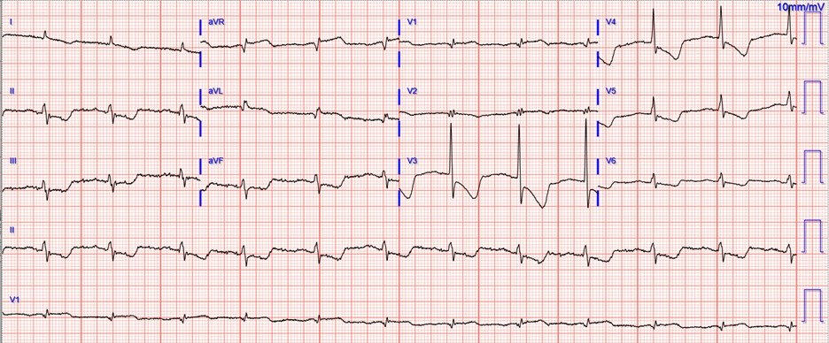
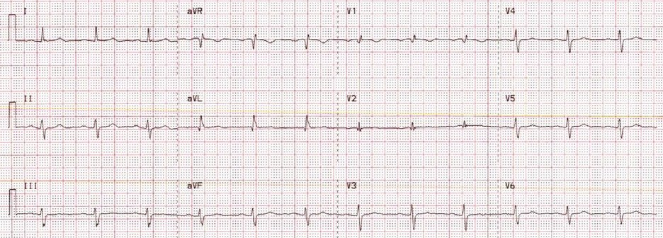
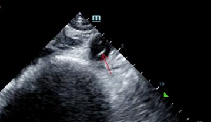
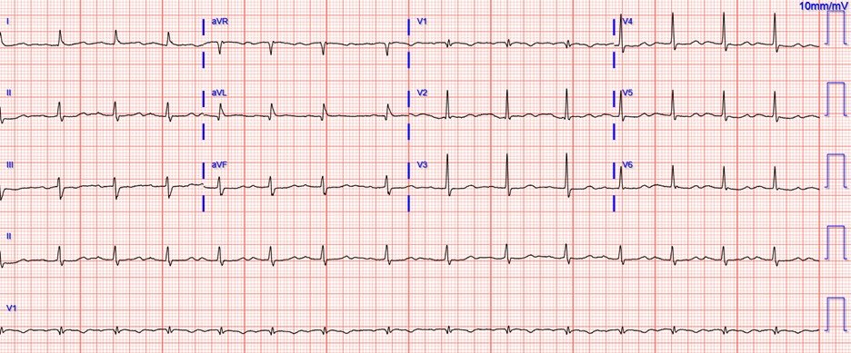
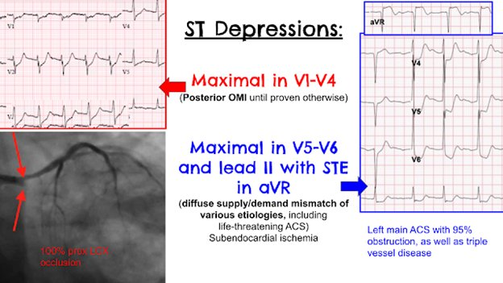
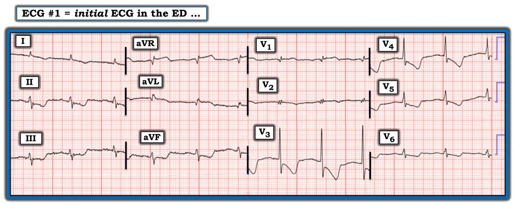

18/12/2022 — Một phụ nữ ở độ tuổi 70 đau ngực
Bản dịch tiếng Việt của bài "A woman in her 70s with chest pain" – Dr. Smith’s ECG Blog. Giữ nguyên toàn bộ 7 hình ảnh và 3 video của bản gốc.
Bài viết và trình bày bởi Quinton Nannet, MD, phản biện bởi Meyers, Grauer, Smith
Một phụ nữ ở độ tuổi 70, mới được chẩn đoán COVID, được đội cấp cứu ngoài viện (EMS) đưa đến sau khi xuất hiện đau ngực sau xương ức kiểu nhói, khởi phát cấp tính, không lan và không khó thở. Bà cảm thấy buồn nôn và choáng váng, không có thiếu sót thần kinh. Đội EMS ghi nhận dấu hiệu sinh tồn trước viện: tần số tim khoảng 60 nhịp/phút, SPO2 98% khi thở khí trời, ban đầu tụt huyết áp còn 66/34, cải thiện lên 100/70 sau khi EMS truyền 800 mL dịch tĩnh mạch. Đây là điện tâm đồ của bà lúc đến khoa cấp cứu (ED):


Điện tâm đồ được xem nhanh và cho thấy nhịp xoang với phức bộ QRS bình thường. Có ST chênh xuống ở các chuyển đạo V3-V6, I, aVL, II, III và aVF, kèm ST chênh lên ở aVR. Điều quan trọng là cũng có ST chênh lên (STE) ở aVL, cũng như ở V1. Chẩn đoán phân biệt gồm:
OMI sau-bên hoặc thiếu máu cục bộ dưới nội tâm mạc
Việc phân biệt giữa OMI thành sau và thiếu máu cục bộ dưới nội tâm mạc có thể quan trọng và đôi khi khó khăn. Thông thường, ST chênh xuống tối đa xét theo tỷ lệ ở V1-V4 gợi ý OMI thành sau, trong khi ST chênh xuống tối đa ở V5-V6 (kèm ST chênh xuống tương tự ở II và ST chênh lên soi gương ở aVR) gợi ý thiếu máu cục bộ dưới nội tâm mạc. Trong OMI thành sau, ST chênh xuống (STD) ở V4 cải thiện đáng kể hoặc mất hẳn khi đi từ V4 đến V6; trong khi ở thiếu máu cục bộ dưới nội tâm mạc, STD vẫn giữ nguyên mức độ hoặc nặng thêm từ V4 đến V6.
Tỷ số STD/sóng R:
V3: 2.5 / 16.5 = 15%
V4: 2.0 / 11.0 = 18%
V5: 0.5 / 5 = 10%, hoặc có lẽ gần với 0.75 / 5 = 15% hơn
V6: 0.5 / 3 = 17%
Vậy đây là một ca khó, vì STD về khách quan có thể tối đa ở V4, nhưng vẫn tồn tại từ V4 đến V6. ST chênh lên ở aVL có lẽ nên được coi là OMI thành bên cho đến khi chứng minh được điều ngược lại (do đó cũng khiến OMI thành sau có khả năng hơn), nhưng trong thiếu máu cục bộ dưới nội tâm mạc, các chuyển đạo có thành phần hướng lên/hướng trên (aVR, V1, aVL) đều có thể cho thấy ST chênh lên soi gương với tình trạng ST chênh xuống lan tỏa hướng xuống dưới và sang trái.
Điện tâm đồ cũ của bà lưu trong hồ sơ được trình bày dưới đây:


Các bước tiếp theo của bạn là gì?
Bạn có kích hoạt phòng thông tim (cath lab) không?
Vì tình trạng tụt huyết áp vẫn chưa rõ nguyên nhân, một lượt siêu âm RUSH đã được thực hiện. Đáng chú ý là siêu âm tim bình thường, không có dịch màng ngoài tim, chức năng thất trái và thất phải bình thường (dù chất lượng hình ảnh chưa đủ để đánh giá rối loạn vận động thành) và động học tĩnh mạch chủ dưới (IVC) bình thường. Không thấy dịch tự do ở lồng ngực, ở các mặt cắt hạ sườn phải, hạ sườn trái hay sau bàng quang. Sau đó đầu dò được chuyển sang động mạch chủ.


Ghi nhận một vạt bóc tách trong động mạch chủ bụng, và đường ra động mạch chủ cũng có vẻ rộng hơn bình thường. Bệnh nhân lập tức được đưa đi chụp CT mạch máu ngực, bụng và chậu.
Type A Axial.mov từ Pendell Meyers trên Vimeo.
Chụp CT mạch máu cho thấy bóc tách động mạch chủ type A, lan từ gốc động mạch chủ về phía gần tới động mạch cảnh và động mạch dưới đòn trái, và về phía xa tới các động mạch đùi chung. Bác sĩ phẫu thuật tim-lồng ngực và phẫu thuật mạch máu được mời hội chẩn, và bệnh nhân được đưa vào phòng mổ trong vòng một tiếng rưỡi kể từ lúc đến khoa cấp cứu. Siêu âm tim qua thực quản (TEE) trong mổ ghi nhận “bóc tách động mạch chủ type A xuất phát cách lá vành không (non-coronary cusp) của van động mạch chủ 1.0 cm về phía xa.” Biên bản phẫu thuật và kết quả đọc của chẩn đoán hình ảnh không đề cập cụ thể liệu vạt bóc tách có gây cản trở một phần hay hoàn toàn dòng chảy mạch vành hay không, hoặc liệu nó có gây cản trở thân chung động mạch vành trái hay RCA hay không. Bệnh nhân được ghi nhận có tràn dịch màng ngoài tim lẫn máu. Chỗ bóc tách được sửa chữa và van động mạch chủ được treo lại. Vào ngày hậu phẫu thứ 1, bà được rút nội khí quản và điện tâm đồ sau đây được ghi:


Troponin độ nhạy cao ban đầu tại khoa cấp cứu của bà dưới 6ng/L (dưới giới hạn phát hiện), và không xét nghiệm thêm lần nào nữa.
TEE trong mổ (trước can thiệp) cho thấy:
Kích thước và bề dày thất trái bình thường
Chức năng tâm thu bình thường với EF 60%
Không có rối loạn vận động thành khu trú theo từng vùng
Chức năng thất phải bình thường
Lòng giả của bóc tách động mạch chủ sa vào van động mạch chủ, gây hở van động mạch chủ nặng, hở chủ mức 3-4+
Bệnh nhân hồi phục tốt trong suốt thời gian nằm viện và xuất viện vào ngày hậu phẫu thứ 6. Thật tuyệt vời là bà đã trở lại cuộc sống bình thường mà không có bệnh lý kèm theo đáng kể nào do bóc tách để lại.
Những điểm cần học:
Điện tâm đồ luôn chỉ là một mảnh ghép của bức tranh lâm sàng. Siêu âm tại giường là một mảnh ghép rất quan trọng khác. Việc siêu âm cho mọi bệnh nhân đau ngực là đáng làm, nhưng đặc biệt là khi có bất kỳ dấu hiệu huyết động nào.
ST chênh xuống do thiếu máu cục bộ bao gồm OMI thành sau và thiếu máu cục bộ dưới nội tâm mạc. Trong bối cảnh hội chứng vành cấp (ACS), ST chênh xuống tối đa ở V1-4 đã được chứng minh là khá đặc hiệu cho OMI thành sau. Thông thường STD của OMI thành sau cải thiện và mất dần từ V4 đến V6, trong khi STD của thiếu máu cục bộ dưới nội tâm mạc thường vẫn tồn tại hoặc nặng thêm từ V4 đến V6.
STD tối đa ở V5-6 và chuyển đạo II, kèm STE soi gương ở aVR, thường gợi ý thiếu máu cục bộ dưới nội tâm mạc do mất cân bằng cung-cầu toàn thể, có thể do rất nhiều nguyên nhân lâm sàng khác nhau, kể cả ACS đe dọa tính mạng.
Siêu âm có thể rất hữu ích để phân biệt các nguyên nhân gây tụt huyết áp. Đôi khi có thể thấy vạt bóc tách bằng siêu âm tại giường.


Đọc thêm:
https://drsmithsecgblog.com/2012/02/five-primary-patterns-of-ischemic-st.html (Năm hình ảnh nguyên phát của ST chênh xuống do thiếu máu cục bộ)
Xem các ca liên quan sau:
A man in his 50s with acute chest pain and diffuse ST depression (Một người đàn ông ở độ tuổi 50 đau ngực cấp và ST chênh xuống lan tỏa)
“Pericarditis” strikes again (“Viêm màng ngoài tim” lại tái xuất)
Is it important to recognize LVH Pseudo-infarction patterns? (Có quan trọng không khi nhận ra các hình ảnh giả nhồi máu do LVH?)
A 50-something with severe chest pain and a normal ECG (Bệnh nhân khoảng 50 tuổi đau ngực dữ dội và điện tâm đồ bình thường)
30 Year Old with Cardiac Arrest, PEA, then Cardiac Ultrasound (Bệnh nhân 30 tuổi ngừng tim, PEA, sau đó siêu âm tim)

==================================
Bình luận của KEN GRAUER, MD (18/12/2022):
==================================
Tôi thấy điện tâm đồ ban đầu trong ca hôm nay (mà tôi đã sao lại trong Hình 1) — thật “bắt mắt”. Tôi tập trung bình luận vào lý do vì sao tôi nghĩ vậy.
- Xin nhấn mạnh: Phần trình bày của BS. Nannet và BS. Meyers đầy đủ và xuất sắc. Phần này đã bao quát rõ ràng mọi điểm giảng dạy MẤU CHỐT.
Vì sao tôi thấy điện tâm đồ #1 “BẮT MẮT”
Thật khó để mắt bạn không bị thu hút ngay lập tức vào phức bộ QRST ở chuyển đạo V3. Phức bộ QRS ở chuyển đạo này lớn nhất, vượt xa các chuyển đạo khác — và — mức độ điểm J chênh xuống cùng kích thước của sóng ST-T đảo ngược cũng lớn nhất. Những dấu hiệu này càng nổi bật hơn khi so với các chuyển đạo kế cận V1 và V2, nơi phức bộ QRST rất nhỏ.
- Ấn tượng ban đầu của tôi là hẳn có gì đó “không ổn”. Nhưng không có gì sai cả — và vị trí đặt điện cực là đúng (được xác nhận nhờ chuyển đạo V1 và V2 trông gần như giống hệt trên bản ghi cũ trong hồ sơ).
- Chuyển đạo “bắt mắt” còn lại trên điện tâm đồ #1 là chuyển đạo V4. Tuy không lớn bằng phức bộ ở chuyển đạo V3 — biên độ QRS và kích thước sóng ST-T rõ ràng lớn hơn nhiều so với ở 10 chuyển đạo còn lại.
- Dù vậy, như BS. Nannet và BS. Meyers đã nêu — có sóng ST-T chênh xuống ở 8/12 chuyển đạo, với mức độ lệch sóng ST-T tương đối là tương đương nhau ở cả 8 chuyển đạo này khi xét đến khác biệt tương đối về biên độ QRS!
- Ở các chuyển đạo còn lại — có ST chênh lên đáng lo ngại ở aVR, aVL và V1 — cùng gợi ý ST dạng vòm (coving) (nếu không nói là chênh lên nhẹ) ở chuyển đạo V2.
Chúng ta được cho biết bệnh sử trong ca hôm nay — là một phụ nữ ở độ tuổi 70 mới được chẩn đoán COVID — đến viện vì đau ngực mới xuất hiện và tụt huyết áp rõ rệt — nhưng không khó thở.
- NHƯNG — Nếu tôi không được cung cấp bệnh sử này — chẩn đoán phân biệt của tôi khi nhìn bản ghi này chắc chắn sẽ được mở rộng. Ngoài 2 khả năng chính mà BS. Nannet và BS. Meyers đã đưa ra ( = OMI sau-bên cấp và thiếu máu cục bộ dưới nội tâm mạc lan tỏa) — tôi sẽ thêm viêm cơ tim (vì bệnh nhân mới được chẩn đoán COVID) — PE cấp (vì có ST-T chênh xuống trông đáng lo ngại ở các chuyển đạo dưới và các chuyển đạo giữa ngực) — và một dạng nào đó của bệnh nhiều nhánh mạch vành (xét đến việc tôi cảm thấy rất chật vật khi cố giải thích toàn bộ tình trạng sóng ST-T chênh xuống trong khi có ST chênh lên trông đáng lo ngại ở các chuyển đạo aVL và V1).
- Vào danh sách trên (nhất là khi xét đến tuổi của bệnh nhân này) — tôi sẽ thêm bệnh cơ tim Takotsubo, do có ít nhất QTc kéo dài nhẹ cùng sự phân bố và mức độ bất thường của các thay đổi lệch sóng ST-T.
- Và — tôi tự hỏi liệu phức bộ QRS rất nhỏ có tổng dương ở chuyển đạo V1 là dấu hiệu mới hay cũ, liên quan đến blốc nhánh phải không hoàn toàn (IRBBB) hay nhồi máu thành sau.
ĐIỀU CỐT LÕI:
- Ghi nhận công lao của các bác sĩ điều trị — vì ca này được giải quyết phần lớn nhờ manh mối từ siêu âm tại giường — không dừng lại ở việc khám tim mà còn tiếp tục đánh giá động mạch chủ.
- ĐIỂM THEN CHỐT (PEARL): Chúng ta thường nghĩ thiếu máu cục bộ dưới nội tâm mạc lan tỏa có đặc điểm là ST chênh xuống ở nhiều chuyển đạo kèm ST chênh lên ở chuyển đạo aVR. Nhưng như BS. Nannet và BS. Meyers đã nêu — đôi khi cũng có thể thấy ST chênh lên ở các chuyển đạo aVL và V1 trong bệnh cảnh này!
- Bệnh nhân đã hồi phục hoàn toàn nhờ hành động nhanh chóng của các bác sĩ điều trị — với ca phẫu thuật sửa chữa bóc tách động mạch chủ thành công.
- Nhìn lại — mọi dấu hiệu điện tâm đồ trên bản ghi ban đầu “bắt mắt” đều đã được giải thích. Sóng ST-T chênh xuống lan tỏa trên bản ghi ban đầu là hậu quả của sốc do bóc tách động mạch chủ của bệnh nhân. Khi xét đến biên độ QRS giảm — mức độ sóng ST-T chênh xuống tương đối là tương đương nhau ở 8 chuyển đạo có dấu hiệu này. ST chênh lên ở các chuyển đạo aVR, aVL và V1 là một phần trong biểu hiện điện tâm đồ này của thiếu máu cục bộ dưới nội tâm mạc lan tỏa. Phức bộ QRS dương rất nhỏ ở chuyển đạo V1 đã có từ lâu. Và sau phẫu thuật sửa chữa — các thay đổi sóng ST-T phần lớn đã hết — và điện tâm đồ cuối cùng không còn “bắt mắt” nữa!

